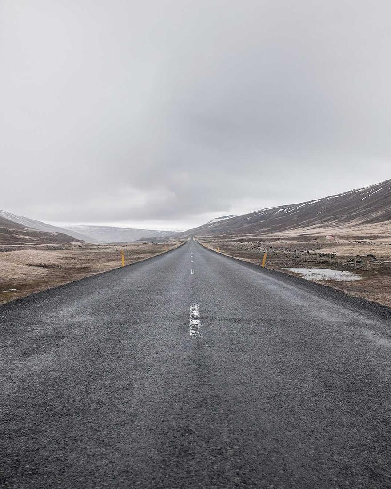
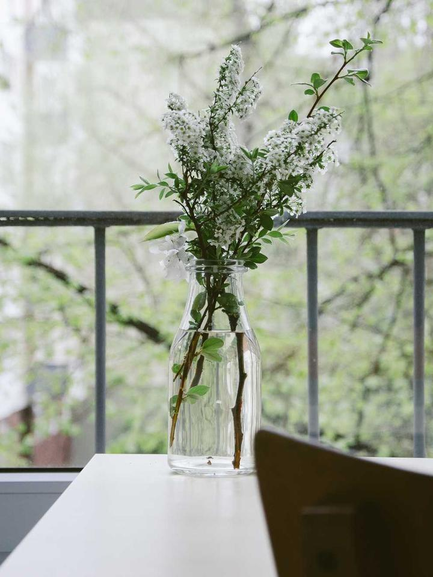

A room should hold its
silence the way a shelf
holds weight: without
announcing the effort.
Astrid Lindqvist · Founding Director
LUMEN // 80 is a Scandinavian atelier for furniture and spatial design.
Each piece is drawn once, prototyped by hand, and built to outlast
the room it enters.


Astrid Lindqvist · Founding Director

MINIMALIST LOUNGE

MONOLITH TABLE

ARCHITETURAL LIGHTING
MATERIAL HONESTY
Slow-grown, quarter-sawn, air-dried for three winters before a single cut is made.
Sourced from two Gotland flocks. The colour is the sheep's, not a factory's.
Volcanic stone finished to a matte touch that reads as warm rather than cold.
Left unlacquered on purpose. Every fingerprint becomes part of the record.

INSIDE THE ATELIER
Our Copenhagen workshop keeps a deliberate ceiling of forty commissions per year. Every piece carries the mark of the lead maker who saw it from rough plank to final oiling.
Visits are by appointment, and we encourage them. Furniture should be met in person before it is chosen.
READ OUR PHILOSOPHY →